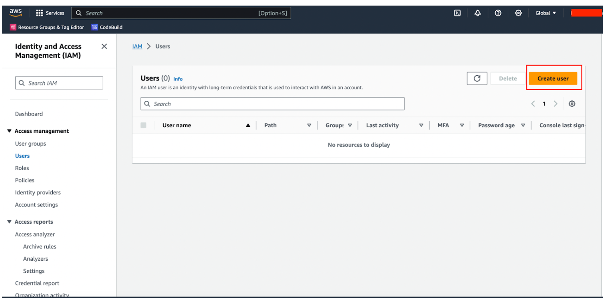
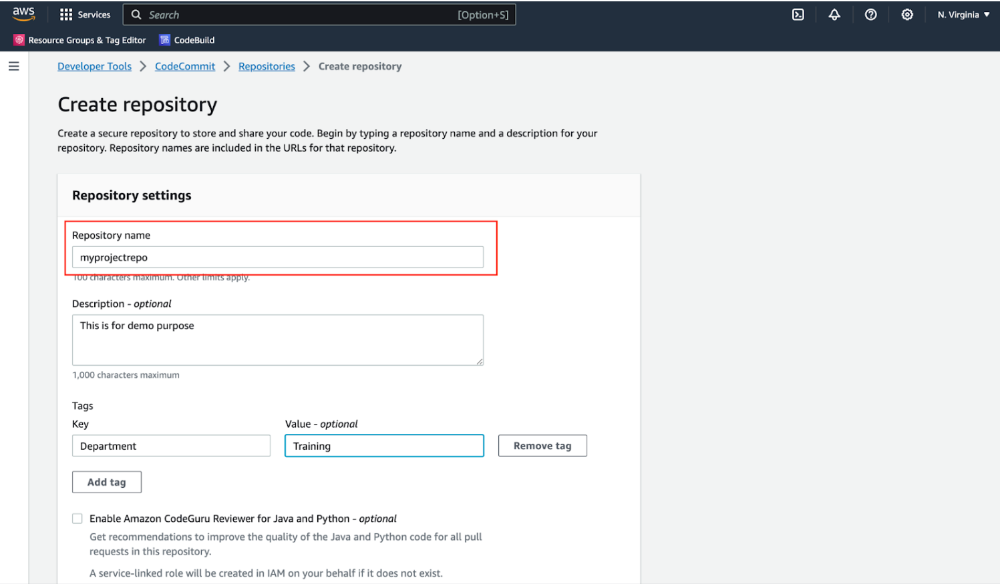

CodeCommit Access Made Easy: IAM User Creation Guide
Introduction:
Here is a general discussion of the topic of creating an IAM user with CodeCommit permissions of a conversation between two people:
Sonali: Hey, have you ever heard about setting up IAM users with CodeCommit permissions on AWS?
Saurabh: Yeah, I have heard about it, but I'm not entirely sure how it works. Can you tell me more about it?
Sonali: Absolutely! It's a pretty important concept, especially if you are working with AWS and CodeCommit for source code management. Essentially, it is about creating specific user accounts with the right permissions to access and work with CodeCommit repositories.
Saurabh: So, why can't we just use our main AWS account for that?
Sonali: Great question! Using your main AWS account for everything might not be the best practice because it's like having a master key to your entire AWS kingdom. With IAM users, you can create individual keys for different team members or applications. This way, you follow the principle of least privilege, giving them access only to what they need and nothing more.
Saurabh: That makes sense, so how do you actually go about creating an IAM user with CodeCommit permissions?
Sonali: It involves a few steps, like creating the user, attaching policies that grant CodeCommit access, and configuring security credentials. You can do it all through the AWS Management Console.
Saurabh: Sounds a bit technical. Is it difficult to set up?
Sonali: It might seem that way, but it's not too complex once you get the hang of it. Plus, it is an important security measure, especially when you are collaborating with a team. You will want to ensure everyone has the right level of access without compromising security.
Saurabh: Got it. It sounds like something we should definitely look into, especially as we scale up our development projects.
Sonali: Absolutely, and it will give you more control and security over your CodeCommit repositories. I can walk you through the steps if you're interested.
Saurabh: That would be fantastic! Let us dive into it.
1.1 Amazon Web Services (AWS)
Amazon Web Services (AWS) provides a range of services to manage your source code repositories, and CodeCommit is one of the most popular Services among them. To effectively use CodeCommit, it's crucial to set up Identity and Access Management (IAM) users with the appropriate permissions.
In this comprehensive guide, we will walk you through the process of creating an IAM user with CodeCommit permissions, explaining each step in detail.
Before we walk through creating an IAM user with CodeCommit Permissions we will study the theory of IAM and CodeCommit Separately.
We will understand exactly IAM.
Certainly! Let's break down the concepts of AWS Identity and Access Management (IAM) in detailed terms explained in easy-to-understand language.
Understand IAM Concepts
-
IAM Users
IAM Users are like individual accounts for people or applications that interact with your AWS resources. These users have unique names and are used to log in to AWS and access services. Think of them as individual keys that allow certain people or programs to access specific AWS services.
-
IAM Groups
IAM Groups are like collections of users that share the same permissions. Instead of assigning permissions to each user individually, you can put them in groups, and then assign permissions to the group. It’s like creating roles for different teams in a company.
-
IAM Policies
IAM Policies are like sets of rules that define what actions users or groups are allowed to perform on AWS resources. These rules specify which services can be accessed and what actions can be taken, such as read or write access. Think of them as the rulebook that guides what each user or group can do.
-
IAM Roles
IAM Roles are a bit like temporary passes. They grant permissions, but they’re not associated with specific users or groups. Roles are often used by applications or services that need to access AWS resources, like EC2 instances. It’s like giving a contractor a special pass to access certain areas in your building.
-
IAM Access Key
An Access Key is like a secret code that IAM users or roles use to interact with AWS programmatically (e.g., using the AWS Command Line Interface). These keys are made up of an Access Key ID and a Secret Access Key. Think of it as a password that only your computer understands.
-
Multi-Factor Authentication (MFA)
MFA adds an extra layer of security. It requires users to provide two pieces of information to access their accounts: something they know (like a password) and something they have (like a smartphone generating a temporary code). It’s like needing both your ID card and a fingerprint to enter a secure facility.
-
Identity Federation
Identity Federation is like connecting your AWS account with an external identity provider (IdP), such as Google or Facebook. Instead of creating separate IAM users, you can use your existing accounts from these providers to access AWS resources. It’s like using your Google account to log in to other websites.
-
AWS Organizations
AWS Organizations is a way to manage multiple AWS accounts. You can create a hierarchy of accounts, which makes it easier to apply policies and manage billing. It’s like having a parent account that controls what all the child accounts can do.
-
Best Practices – Keeping Your Castle Secure
- 9. A. Least Privilege Principle
This is a critical concept in IAM. It means giving users or roles the minimum permissions they need to do their job, and nothing more. Imagine if you’re lending your car; you’d only give the keys, not your entire wallet.
- 10. Audit Trail
IAM creates logs that track who did what and when within your AWS account. This helps with security and compliance. Think of it as a detailed journal of everything that happens in your account.
- 9. A. Least Privilege Principle
In essence, IAM is like the guardian of your AWS kingdom, controlling who gets in, what they can do, and keeping a watchful eye on all activities. Understanding these concepts is crucial for maintaining security and efficiently managing your AWS resources.
We have studied the AWS IAM concepts.
Now, we will discuss the CodeCommit concept.
What is CodeCommit?
AWS CodeCommit is like a secure vault for your source code. It’s a fully managed source control service provided by Amazon Web Services (AWS) that helps you store, track changes to, and collaborate on your software projects.
Here’s a more detailed explanation of what AWS CodeCommit is and what it offers:
-
Source Control Repository:
CodeCommit acts as a repository, like a digital library where you store all your source code and related files for a software project.
-
Version Control:
It provides version control capabilities, specifically using Git, a popular distributed version control system. Git helps you keep track of changes made to your code over time.
-
Secure and Private:
CodeCommit ensures the security and privacy of your code. It encrypts your code at rest and in transit, and it allows you to control access with fine-grained IAM (Identity and Access Management) permissions.
-
Collaboration:
CodeCommit supports collaboration among developers. Multiple team members can work on the same project, contribute code changes, and merge their work seamlessly.
-
Branching:
Just like Git, CodeCommit allows you to create branches. Branches are like separate lines of development where you can work on different features or bug fixes without affecting the main codebase.
-
Commit History:
CodeCommit maintains a detailed history of commits, showing who made changes, when they were made, and what was changed. This helps you track the evolution of your code.
-
Pull Requests:
You can use pull requests to invite your team to review and discuss your code changes before they are merged into the main codebase. This is a crucial part of the code review process.
-
Integration:
CodeCommit can be integrated with other AWS services and third-party tools, allowing you to automate your software development workflows. For example, you can set up AWS CodeBuild to automatically build and test your code when changes are pushed to CodeCommit.
-
Scalable:
CodeCommit can handle large code repositories and accommodate the needs of both small teams and large enterprises.
-
Backup and Redundancy:
Your code is backed up and replicated across multiple data centers, ensuring that it remains available and protected.
In summary, AWS CodeCommit is like a secure, scalable, and fully managed source control service that enables you to store, version, and collaborate on your software projects.
It’s an integral part of the AWS DevOps ecosystem, helping you manage your code and streamline your development processes while maintaining the highest levels of security and reliability.
Getting Started With Create an IAM User With AWS CodeCommit Permissions
Configuring an IAM (Identity and Access Management) user for CodeCommit involves setting up the necessary permissions and access credentials.
Here, we will walk through the steps to configure an IAM user specifically for AWS CodeCommit using the AWS Management Console. This process will allow the user to interact with CodeCommit repositories.
Step 1: Sign In to the AWS Console
Open your preferred web browser and go to the official AWS website by entering the following URL in the address bar https://aws.amazon.com/:

On the AWS home page, locate and click on the “Sign In to the Console” button. This will take you to the AWS Management Console sign-in page.
After completing these steps, you will be successfully signed in to the AWS Console, where you can begin managing your AWS resources, including setting up IAM users and configuring their permissions for AWS services like AWS CodeCommit.
Step 2: Access IAM Service
In this step, We will see the “Access to IAM service”.
Once you are logged in, you will land on the AWS Dashboard. In the top search bar, type “IAM” and select “IAM” under “Services.”
IAM Dashboard:
Clicking on “IAM” from the Services menu takes you to the IAM dashboard. This dashboard is where you perform user management tasks, create and configure IAM users, set up groups, define roles, assign permissions, and establish security policies. It’s a critical component of maintaining the security and access control of your AWS resources.
In summary, Step 2 is about accessing the IAM (Identity and Access Management) service within the AWS Management Console. IAM is essential for controlling and managing user access to AWS services and resources securely.
This step is a foundational part of configuring IAM users and granting them permissions for services like AWS CodeCommit.
Step 3: Locate the IAM User
Certainly! Let’s explain Step 3, “Locate the IAM User,” as below:
After accessing IAM services, now you will find the IAM user.
Click on ‘Users’:
Within the IAM Dashboard, there is a navigation pane on the left side. Clicking on ‘Users’ in this navigation pane takes you to the section where you can manage IAM users.
List of Existing “IAM Users”:
Upon clicking ‘Users,’ you are presented with a list of IAM User names. This list displays all the IAM Users that have been created in your AWS account, along with details such as user ARNs (Amazon Resource Names) and creation dates.
Step 3 is about navigating to the IAM User Management section within the IAM Dashboard. It allows you to view and manage individual IAM Users, including creating new ones, configuring their security credentials, and defining their permissions for accessing AWS services and resources.
Step 4: Create or Select an IAM User
Let’s explain Step 4, “Create or Select an IAM User,” as below:
- If you are creating a new IAM user:
- Specify a username for the user (e.g., “JohnDoe”).
- Choose whether the user should have programmatic access (using AWS APIs and CLI) and/or AWS Management Console access (web-based access).
- Generate security credentials for the user, including an access key and a secret access key for programmatic access, and an initial password for console access.
- Programmatic Access: This option allows the IAM User to interact with AWS programmatically using AWS SDKs, APIs, and command-line tools. You will need to manage their access keys, which are used for authentication.
- AWS Management Console Access: Choosing this option permits the IAM User to log in to the AWS Management Console through a web browser. This is useful when users need a web-based interface for managing AWS resources.
- If you are configuring an existing IAM user:
- Username:
- Type of Access:
- Programmatic Access: This option allows the IAM User to interact with AWS programmatically using AWS SDKs, APIs, and command-line tools. You will need to manage their access keys, which are used for authentication.
- AWS Management Console Access: Choosing this option permits the IAM User to log in to the AWS Management Console through a web browser. This is useful when users need a web-based interface for managing AWS resources.
Selecting this option allows you to create a new IAM User. When you create a new user, you:
Username:
The username is a unique identifier for an IAM User within your AWS account. It is used to distinguish one user from another. Each IAM User must have a distinct username.
Type of Access:
There are two types of access:
This option is used when you want to work with an IAM User that you’ve already created in your AWS account. You can select from a list of existing users.
It’s like selecting a character in a video game that you’ve previously created and customized.
The username is a unique identifier for an IAM User within your AWS account. It is used to distinguish one user from another. Each IAM User must have a distinct username.
There are two types of access:
Step 4 involves creating or selecting IAM Users, which serve as identity entities with specific access capabilities within AWS. It also involves defining the access methods (programmatic or console) and setting up security credentials for these users, depending on their roles and requirements within your AWS environment.
Step 5: Attach Permissions
Let’s explore Step 5, “Attach Permissions,” in detail as below:
In Step 4, you either created a new IAM User or selected an existing one. However, at that point, the IAM User didn’t have any specific permissions. It was merely an identity within your AWS account.
In the “Set permissions” section, you have two options:
- Attach Permissions:
Step 5, “Attach Permissions,” is the process of associating specific IAM permissions with the IAM User.
Groups and Policies:
Permissions can be managed by adding the IAM User to IAM Groups or attaching IAM policies directly to the user. IAM Groups act as containers for users with shared permissions. IAM policies are sets of permissions that can be fine-tuned to allow or deny access to AWS resources.
In this case, no group is required.
Step 6: Search for CodeCommit Policies
In this step, Let’s search for CodeCommit policies.
In the “Search policies” search bar, type “AWSCodeCommit” to find policies related to CodeCommit.
You should see policies like “AWSCodeCommit_FullAccess” (which grants full access) or “AWSCodeCommit_ReadOnly” (which grants read-only access).
Select the appropriate policy based on your requirements. For this example, let’s choose “AWSCodeCommit_FullAccess.” as shown below:
Step 7: Review and Add Permissions
After choosing “AWSCodeCommit_FullAccess”, In this step we will do “Review and Add Permissions” as below:
After adding or adjusting permissions, review your changes carefully to ensure they align with your organization’s security policies. Double-check that you have not granted excessive permissions.
When you are satisfied, proceed to the next steps, typically by clicking “Next” or “Review.”
Save Changes: Once you have reviewed and confirmed the permissions, save your changes. Your IAM entity now has the updated permissions.
Step 8: Review User Details
In Step 8, “Review User Details,” you will want to carefully review and verify the details you’ve configured for an IAM (Identity and Access Management) user before creating the user. This step is important to ensure that the user’s settings are accurate and align with your organization’s requirements.
Review the user details to ensure they are correct as shown below:
Step 9: Complete the User Creation or Permission Assignment
Click “Download .csv” to download a CSV file containing the access key ID and secret access key. Store this file in a secure location. You won’t be able to retrieve the secret access key again.
If you are creating a new IAM user, you will now see a confirmation message indicating that the user has been created successfully. Make sure to note down the user’s username and the console sign-in link for future reference.
Now, you have successfully created the IAM user for CodeCommit As shown in the above image.
Step 13: Next Steps
After creating or configuring the IAM user for CodeCommit, you can proceed with the following steps:
- Configure AWS CLI or SDKs on your local development environment using the access key ID and secret access key to interact with CodeCommit programmatically.
- Grant the IAM user access to specific CodeCommit repositories by configuring repository-level permissions and adding the user to the repository’s IAM policies.
- Begin using CodeCommit for version control by pushing, pulling, and managing your code repositories.
Remember that IAM user permissions should be fine-tuned based on the principle of least privilege, ensuring that users only have access to the AWS resources they need. Regularly review and update permissions as necessary to maintain security and compliance.
Step 14: Granting Repository Access
In Step 14, “Granting Repository Access,” you are taking actions to grant specific users or groups access to your AWS CodeCommit repository. This step is essential to control who can view, clone, push changes, and perform other actions on your Git repositories hosted on AWS CodeCommit. Here’s how you can grant repository access:
- Select Your Repository: From the list of repositories on the CodeCommit dashboard, choose the repository to which you want to grant access. Click on the repository name to open its details.
- Access Control: Inside the repository details, look for an “Access control” or “Permissions” section, where you can configure who has access to the repository.
- Add Users or Groups: Typically, you have the option to add users or groups to the repository’s access control list. This could include IAM users, IAM groups, or even specific AWS accounts.
- Define Permissions: For each user or group you add, specify the permissions you want to grant them. AWS CodeCommit provides fine-grained access control, allowing you to grant read-only or read-write permissions, control access to specific branches, and more.
- Read-only access: Users with read-only access can clone the repository and view its contents but cannot make changes.
- Read-write access: Users with read-write access can clone the repository, view its contents, and make changes, including pushing changes back to the repository.
- Access Levels: Depending on your requirements, you may set different access levels for different users or groups. For example, developers might get read-write access, while auditors may get read-only access.
- Review and Confirm: Before finalizing the permissions, review your choices to ensure you’re granting the appropriate access to the right users or groups.
- Save Changes: Once you’ve confirmed the permissions, save your changes. The access control settings are now in effect for the selected repository.
- Test Access: It’s a good practice to test the access you’ve granted to ensure that users or groups can perform the intended actions in the repository.
- Monitor and Revise: Regularly monitor and revise access control settings as needed. As project requirements change or team members come and go, you’ll want to adjust repository access accordingly.

Remember that you can also use AWS Identity and Access Management (IAM) to control CodeCommit access at a broader level. IAM allows you to define policies that govern access to all repositories within your AWS account. This can be useful for setting up default permissions for all repositories and then refining access control at the repository level as necessary.
Carefully managing repository access in AWS CodeCommit is crucial for ensuring the security and integrity of your source code while enabling collaboration among your development team.
Step 15: Repository Access Permissions
In this step, we will see the Repository Access Permissions in detail as below.
In Step 15, “Repository Access Permissions,” you are configuring and fine-tuning the access permissions for users, groups, or AWS accounts that you’ve granted access to within your AWS CodeCommit repository. This step allows you to define who can do what within the repository with granular control over their actions.
Here is how you can set and manage repository access permissions:
- In the “Add permissions” dialogue, you will specify who can access and interact with the selected CodeCommit repository.
- Type: Choose “IAM users, roles, or groups” to define the identity or group to which you want to grant access.
- Name: Enter the IAM username, group name, or role name that you want to grant access to the repository. This identifies the AWS identity that will receive the permissions.
- Access level: Select the appropriate access level for the IAM entity you are granting access to.
- Access Levels: Depending on your requirements, you may set different access levels for different users or groups. For instance, developers might be given read-write access, while auditors or external collaborators may receive read-only access.
- Read: Opt for “Read” if you want to provide read-only access to the repository. Users with read access can clone the repository, view its contents, and fetch code, but they can’t make changes.
- ReadWrite: If you wish to grant full access to the repository, choose “ReadWrite.” Users with read-write access can not only view the code but also make edits, create branches, and push commits.
- Permission Overview: The permissions you add here establish an access control list (ACL) for the repository, specifying who can or cannot access it.
- IAM users, groups, or roles added at this stage inherit the permissions defined by the chosen access level.
- You can add multiple IAM entities to grant access to various users, groups, or roles, each with its own access permissions.
- Beyond this, you can further fine-tune access control by configuring policies in your IAM settings to define more detailed permissions.
- Save Permissions: After defining the IAM entities, access levels, and permissions, click “Add” to save these access permissions for the selected CodeCommit repository.
- Verification: Upon adding permissions, review the permissions summary to confirm their accurate configuration. You should see a list of IAM entities along with their associated access levels.
- Testing Access: To confirm that access permissions are functioning correctly, consider testing repository access using the IAM entities you’ve granted access to. This will ensure that users can interact with the repository according to their permissions.
- Regular Review: Periodically revisiting and updating repository access permissions is crucial to adapt to the evolving needs of your project and team. This practice ensures that security and compliance standards are maintained over time.
By configuring these repository access permissions, you can effectively manage and control who has access to your AWS CodeCommit repository, providing the appropriate level of access to team members and collaborators while maintaining the security and integrity of your codebase.
Step 16: Configuring Git Credentials
In this step, we will configure git credentials.
After setting up IAM user permissions, the next step is configuring Git credentials. This ensures that Git can authenticate and interact securely with AWS CodeCommit repositories.
To interact with the CodeCommit repository from your local development environment, you will need to configure Git credentials.
There are two common methods for configuring Git credentials: “HTTPS Git credentials and SSH keys.”
You have two options for setting this up:
- Option 1: HTTPS Git Credentials:
- Open a terminal or command prompt on your local machine.
- Run the following command, replacing ‘
’ with the username of the IAM user: - git config –global credential.helper ‘!aws codecommit credential-helper $@’:
- ‘git config’: This is the Git command used for configuring Git settings.
- ‘–global’: The ‘–global’ flag specifies that the configuration should be applied globally to your user account. This means it will affect all Git repositories on your system.
- credential.helper: This is a Git configuration property used to specify a credential helper. A credential helper is a tool that Git uses to store and retrieve credentials, such as usernames and passwords, for various services.
- ‘!aws codecommit credential-helper $@’: This is the actual credential helper configuration. Let’s break it down:
- ‘!aws codecommit credential-helper’ is a utility provided by AWS for interacting with CodeCommit repositories. It’s used to manage authentication credentials for CodeCommit.
- $@ is a special shell variable that represents all the arguments passed to the command. In this context, it’s used to pass any additional parameters or arguments to the aws codecommit credential-helper utility.
- Effect: When you run this command, you’re configuring Git to use the ‘aws codecommit credential-helper’ as a credential manager. This helper will securely store and retrieve your CodeCommit credentials, so you don’t have to enter your credentials manually every time you interact with a CodeCommit repository.
- ‘git config –global credential.UseHttpPath true’:
- ‘git config’: This is the ‘Git’ command used for configuring Git settings.
- ‘–global’: Just like in the previous command, the ‘–global’ flag specifies that the configuration should be applied globally to your user account.
- ‘credential.UseHttpPath’: This is another Git configuration property. It’s used to enable or disable the use of the HTTP(S) URL path when identifying credentials for Git operations.
- ‘true’: Setting this property to ‘true’ means that Git will consider the full HTTP(S) URL path when matching credentials. This is particularly useful when you have multiple repositories hosted on the same domain but with different credentials.
- Effect: When you run this command with true, you are telling Git to consider the full URL path when identifying credentials. This ensures that the correct credentials are used for each repository, even if they share the same domain.
- Option 2: SSH Keys:
This option is more straightforward for beginners.
git config –global credential.helper ‘!aws codecommit credential-helper $@’
git config –global credential.UseHttpPath true
Certainly, let’s explain the two ‘git config’ commands in detail:
In summary, these Git configuration commands are used to set up and configure Git to work seamlessly with AWS CodeCommit. They ensure that Git uses the ‘aws codecommit credential-helper’ to securely manage your CodeCommit credentials and that Git considers the full URL path when identifying credentials to avoid conflicts in case you have multiple repositories on the same domain. These configurations enhance the convenience and security of working with CodeCommit repositories.
Option 2: SSH Keys:
This option involves generating SSH keys and associating them with your IAM user. It provides secure access to CodeCommit.
- In the terminal or command prompt, generate an SSH key pair:
ssh-keygen: This is the main command for generating SSH key pairs. It is a part of the OpenSSH suite of tools, which provides secure remote access to servers and secure file copying between a local and a remote computer.-t rsa: This is an option specifying the type of key to generate. In this case, it indicates that you want to generate an RSA (Rivest–Shamir–Adleman) key pair. RSA is a widely used asymmetric encryption algorithm for secure communication.-b 2048: This is another option specifying the number of bits in the key. In this case, it specifies that you want to generate an RSA key with 2048 bits. The key’s bit length directly affects its security. Longer keys are more secure but may also require more computational resources to use.- ‘
ssh-keygen’ generates a new RSA key pair, which consists of two parts: a private key and a public key. - The private key is stored securely on your local computer. It should never be shared or exposed to others. It’s used for authentication when connecting to remote servers.
- The public key is also generated and saved in a file. By default, it’s saved in ‘
~/.ssh/id_rsa.pub’. This is the key you can share with remote servers, allowing them to verify your identity when you connect. - The key pair is protected with a passphrase. You’ll be prompted to enter a passphrase for additional security. The passphrase is like a password for your private key. It’s recommended to set a passphrase, but you can leave it empty if you prefer.
- b. Add the generated SSH public key to the IAM user’s SSH keys:
- Select the IAM user you configured for CodeCommit.
- In the “Security credentials” tab, under “SSH keys for AWS CodeCommit,” click “Upload SSH public key” and upload the public key file ( ‘
~/.ssh/id_rsa.pub’ by default).
Certainly! The ssh-keygen command is used to generate SSH (Secure Shell) key pairs for secure authentication and communication between your computer and remote servers. Let’s break down the ‘ssh-keygen -t rsa -b 2048’ command in detail:
How ‘ssh-keygen’ Works:
When you run ‘ssh-keygen -t rsa -b 2048’, the following happens:
In summary, ‘ssh-keygen -t rsa -b 2048’ is a command used to generate an RSA key pair for secure authentication and communication with remote servers. The private key is kept secure on your local machine, while the public key is shared with servers you want to access. This method enhances security and convenience when working with remote systems.
Follow the prompts to create the key pair.
In the AWS Management Console, navigating to IAM means accessing the IAM service within the AWS Management Console.
Step 17: Clone the Repository
In this step, We will see steps to Clone a Repository.
- To start working with your CodeCommit repository, you will need to clone it to your local machine.
- In the CodeCommit repository’s AWS Console, click the “Clone URL” button. This will provide you with the HTTPS or SSH clone URL.
- In your terminal or command prompt, navigate to the directory where you want to store the repository.
- Run the following command, replacing ‘
’ with the URL you copied:
Certainly, let’s explain the ‘git clone <Clone-URL>’ command in detail:
- ‘git’: This is the Git command-line tool, which is used for various Git operations, including cloning repositories.
- ‘Clone’: The ‘clone’ command is used to create a copy or clone of a Git repository. It creates a local copy of a remote repository, allowing you to work on the project locally.
- ‘
’: This is a placeholder for the actual URL of the Git repository you want to clone. The URL specifies the location of the remote repository you want to copy. The URL can be in one of two formats:
How ‘git clone’ Works:
When you run ‘git clone <Clone-URL>’, Git performs the following steps:
- It contacts the remote repository specified by the ‘
’ and retrieves all of its code and history. - Git creates a new directory on your local machine with the same name as the repository (the last part of the URL).
- It copies all of the files and history from the remote repository into this new directory.
- Git sets up a connection between the local repository and the remote repository so you can interact with it. This connection is called a “remote.”
- The local repository is now a complete copy of the remote repository, and you can make changes, commits, and other Git operations locally. Any changes you make can later be pushed back to the remote repository to share with others.
In summary, ‘git clone <Clone-URL>’ is the command you use to create a local copy of a Git repository from a remote location. It’s the first step in collaborating on a Git project, allowing you to work on the code and contribute changes.
Step 18: Push and Pull Code
You’re now ready to work with your CodeCommit repository locally. Make changes to your code, commit those changes, and then push them back to the CodeCommit repository using Git commands like ‘git add’, ‘git commit’, and ‘git push’.
You can also pull the latest changes from the repository to keep your local copy up to date using ‘git pull’.
Congratulations! You have successfully configured an IAM user for AWS CodeCommit, granted repository access, and set up Git credentials to interact with your CodeCommit repository from your local development environment. You are now ready to collaborate and manage your code with CodeCommit.
Conclusion
After studying IAM Theory and AWS CodeCommit Theory in short, Creating an IAM user with CodeCommit permissions is an essential step to managing your source code repositories on AWS securely. It’s a crucial step in ensuring that your projects run smoothly, your code remains safe, and your collaboration efforts thrive.
By following the steps outlined in this guide, you can grant the right level of access to your developers while maintaining the highest standards of security. Remember to regularly review and update permissions to align with your project’s evolving needs.
Explore more online AWS courses at:
https://university.pravinmishra.in
Share this post: